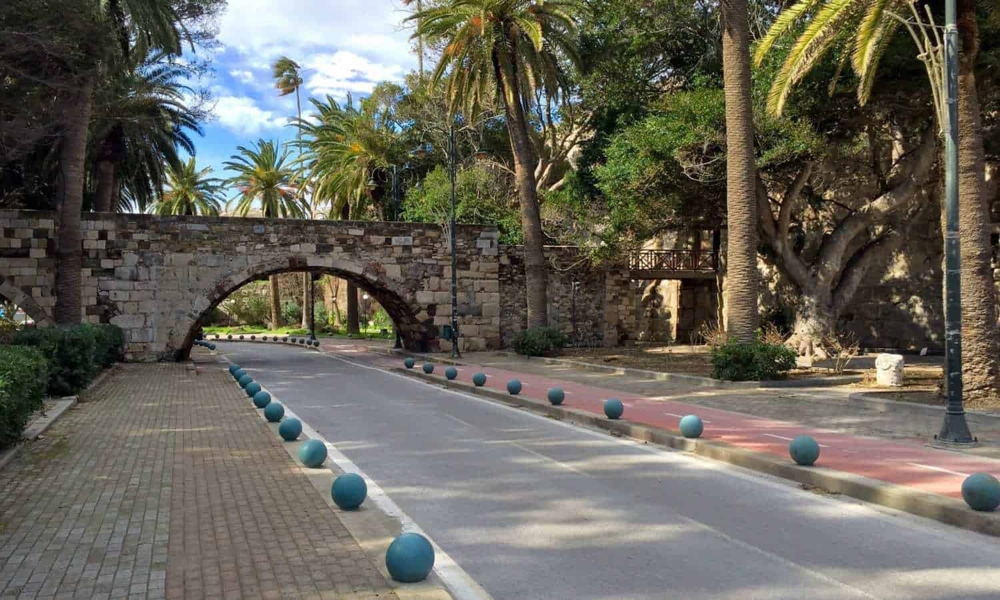

Palm Tree Lane
Brede laan met palmen en de oude boogbrug – vroeger water tussen kasteel-eiland en stad, nu een van de bekendste straten van Kos-stad.
Herkenningspunt van Kos-stad
Palm Tree Lane (Finikon / Phoinikon Avenue) is een van de meest herkenbare plekken van Kos-stad: een brede laan met de oude stenen boogbrug en uitzicht op het kasteel van Neratzia.
Van eiland naar laan
Het kasteel van Neratzia stond vroeger op een klein eiland, gescheiden van het vasteland door water. Tijdens de Italiaanse bezetting (rond 1912–1943) vulden ze de gracht op met aarde, zodat het eilandje vast kwam te liggen aan de stad.
Ze maakten er een brede laan van, met de oude stenen boogbrug die er nog steeds ligt. De Italianen plantten hoge palmen langs beide kanten, voor schaduw en een mooi beeld.
Palmen gekapt
Enkele jaren geleden moesten alle palmen worden gekapt door een invasieve keversoort die de bomen aantastte en zich kon verspreiden. Er staan weer (nieuwe) palmen; de laan blijft een centrale wandel- en fietsroute bij de haven.
Video’s
Beelden van Palm Tree Lane en de omgeving:

De laan Brug
Brug
Bezoeken
Gratis, altijd toegankelijk – tussen haven, kasteel en centrum.